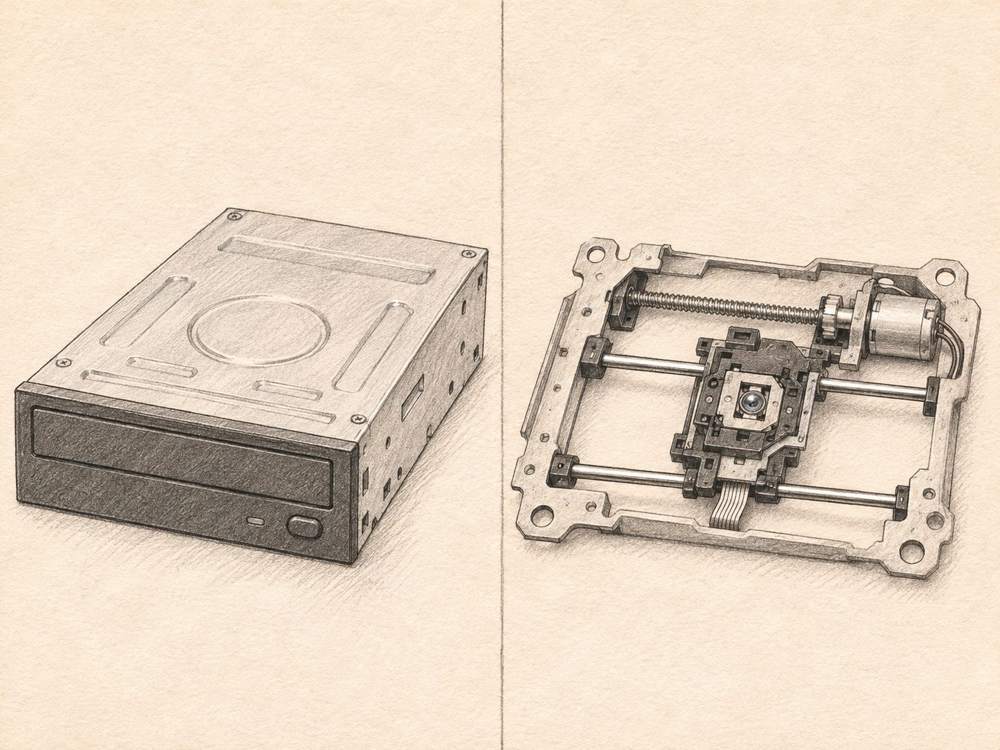
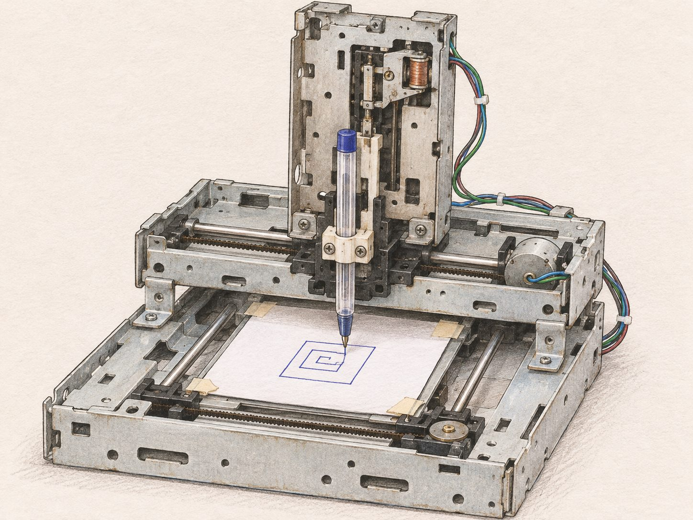
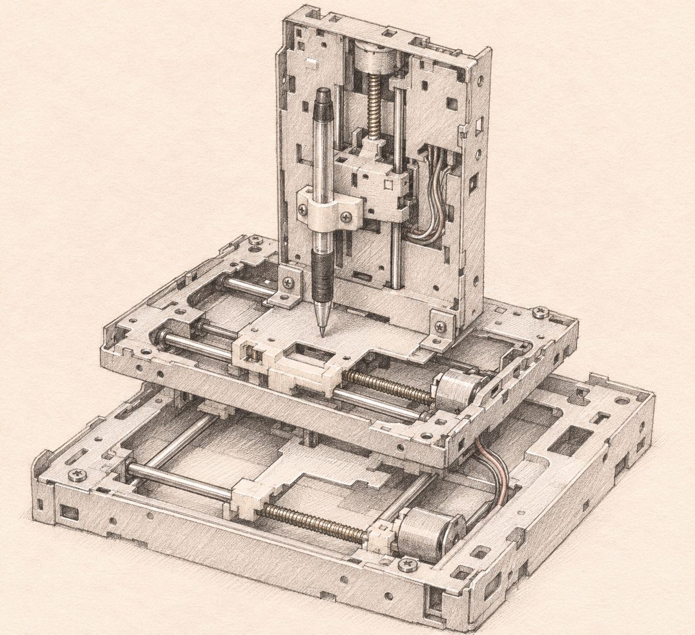
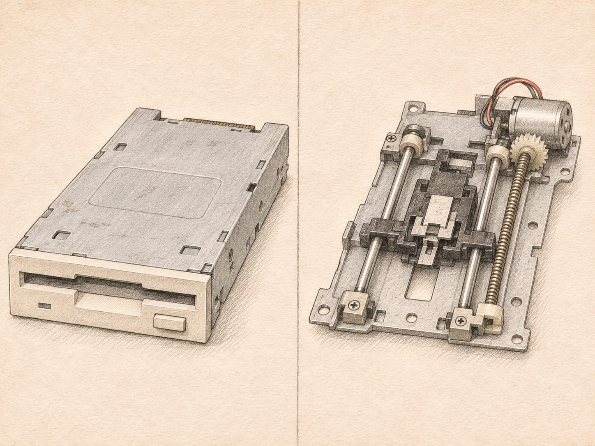
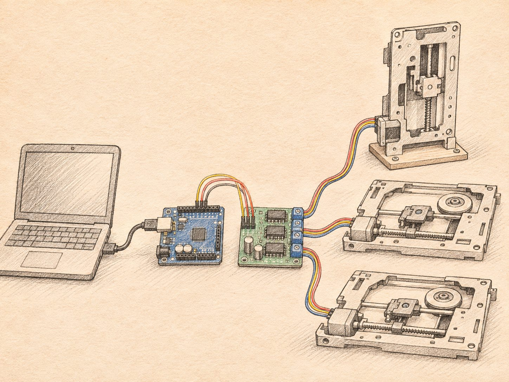

X/Y

Eixos X e Y
Dois mecanismos reutilizados de leitores CD/DVD, unidos para formar os movimentos horizontais da Mini CNC.
Desenvolvimento de uma máquina CNC de três eixos, construída a partir de componentes eletrónicos reutilizados, com o objetivo de executar desenhos através de uma caneta controlada por computador.


Projeto reconhecido na disputa entre as unidades escolares da Electra.
O objetivo era desenvolver uma pequena máquina CNC de três eixos, capaz de reproduzir desenhos numa superfície através de uma caneta.
A proposta partiu do reaproveitamento de equipamentos eletrónicos, procurando construir uma solução funcional com o mínimo possível de componentes adquiridos.
A escolha dos mecanismos de CD/DVD teve como principal critério o baixo custo e a disponibilidade de componentes reutilizados. Para a demonstração pretendida, eram suficientes.
A estrutura foi construída com materiais reaproveitados, integrando mecanismos de equipamentos eletrónicos descartados.

Dois mecanismos reutilizados de leitores CD/DVD, unidos para formar os movimentos horizontais da Mini CNC.

Mecanismo de uma unidade de disquetes reutilizado para controlar o movimento vertical da caneta.
Representações conceptuais aproximadas, baseadas na descrição do autor. Não são fotografias nem reproduções exatas da máquina original.
A caneta era a ferramenta utilizada na versão original. A possibilidade de adaptação para outras ferramentas, como uma ferramenta de corte apropriada, foi considerada como uma evolução possível do conceito.

O sistema utilizava um Arduino, ligado a um computador portátil através de USB.
A configuração e programação do microcontrolador eram realizadas em C/C++, permitindo controlar o funcionamento dos mecanismos e os movimentos dos eixos.
Ligação conceptual: portátil → Arduino → controlador dos motores → mecanismos. O modelo do circuito controlador usado na máquina original ainda está por confirmar.
O projeto envolveu a conversão da alimentação da rede elétrica (110/220 V) para 12 V em corrente contínua.
Foram utilizados um multímetro e um sistema de regulação para verificar e ajustar os valores de tensão necessários ao funcionamento do circuito.
Preparação do desenho no computador para posterior execução pela máquina.
Configuração do sistema e preparação das instruções necessárias aos movimentos.
Ligação do Arduino ao portátil através de USB.
Movimentação dos eixos e reprodução do desenho através da caneta.
A utilização de G-code e do software específico de controlo ainda está a ser confirmada através da documentação original.
Um dos principais desafios foi adaptar componentes originalmente concebidos para outros equipamentos e integrá-los numa estrutura capaz de executar movimentos coordenados.
A calibração e o alinhamento dos eixos exigiam atenção, uma vez que pequenos desvios podiam comprometer a precisão do desenho.
A pesquisa foi realizada através de fóruns, vídeos e documentação técnica disponível na internet.
Sem as ferramentas de inteligência artificial atualmente disponíveis, foi necessário experimentar, testar e persistir até conseguir colocar o protótipo em funcionamento.
A experiência adquirida com a Mini CNC original despertou o interesse em desenvolver uma nova versão, explorando motores de impressora, melhorias mecânicas e novas possibilidades de controlo.
O objetivo é revisitar o conceito, documentar o processo de construção e aplicar os conhecimentos adquiridos ao longo do tempo.